Unit 01 · Sequence models and transformer workload
Lesson 01: Sequence models and transformer workload
Unit: cs229s-U01. Concepts: cs229s-U01-C01 to C12. Date: 2026-10-06. Baseline: October 6, 2026. Claim class for every leaf: PLANNED / SOURCE ATTRIBUTION PENDING. Family anchor: CALENDAR-ANCHORED, Week 1, Sep 27, “Transformer Architecture” (Sequence Modeling, RNNs, Transformers, Pretraining and Fine-Tuning).
How to read this lesson
Each concept carries the 15-item contract in compact form:
source and scope, motivating question and toy, mental model,
objects and shapes, derivation, computed example, implementation
and checks, costs, nearest alternative with a selection
boundary, failure case, research reading with a falsifiable
extension, exercises (keys in keys.md), and visual units.
Shared symbols follow notation_and_shapes.md.
C01: RNN/transformer comparison
Source, scope, objectives, dependencies
Calendar anchor: Week 1, Sep 27, session topics “RNNs” and “Transformers” under “Sequence Modeling”. Scope: why the field moved from recurrence to attention for long sequences. Objective: state the sequential bottleneck of an RNN and the parallel path of a transformer, with shapes. Depends on P11, P13.
Motivating question and tiny toy
Question: a sentence has 8 tokens. The model must connect token
1 to token 8. How many steps does each architecture force?
Toy: tokens t1..t8, hidden size 4. RNN state h has shape
(4,). Transformer works on the full matrix X of shape
(8, 4).
Mental model
An RNN is a relay runner. Each runner reads one token and the note from the previous runner, then passes a new note on. The note must survive every handoff. A transformer is a meeting: every token looks directly at every other token through attention scores, so token 8 reads token 1 in one hop.
Objects, shapes, assumptions
- RNN:
h_t = f(h_{t-1}, x_t).h_tshape(n,). Assumption: one shared functionffor all positions. - Transformer:
A = softmax(QK^T / sqrt(d)),Ashape(T, T). Assumption: positions are distinguishable only through positional information added toX. - Path length: RNN needs
T - 1sequential steps from token 1 to tokenT. Attention needs 1 step.
Derivation
RNN step t needs h_{t-1}, so steps run in order. Total
sequential steps for length T equal T. Attention computes
all T^2 query-key pairs at once. The longest dependency path
has length 1, but the work per layer is O(T^2 d) and all of
it runs in parallel.
Computed example
Toy: T = 8, n = 4. RNN: 8 sequential steps, each a
(4,)-to-(4,) update. Longest path: 7 handoffs. Transformer:
one parallel attention step, 8 x 8 = 64 scores, longest
path: 1 hop. Same toy as the lab (lab-01 checks the path
length count).
Implementation and checks
Reference in numpy (also lab-01):
import numpy as np
def rnn_steps(T):
# count sequential steps: one per token
return T
def attn_path_length(T):
# longest dependency path through one attention layer
return 1
assert rnn_steps(8) == 8
assert attn_path_length(8) == 1
Check: change T to 16. RNN steps double to 16. Attention
path stays 1. The invariant is path length, not work.
Complexity and costs
RNN: O(T) sequential steps, O(T) total work, constant
memory in T for inference state. Transformer: O(1)
sequential steps per layer, O(T^2) work, O(T^2) memory for
the score matrix in the naive form. The trade is parallelism
for memory.
Nearest alternative and selection boundary
Nearest alternative: keep the RNN and fight the bottleneck
with gating (LSTM/GRU). Selection boundary: choose attention
when training hardware is parallel and sequences are long
enough that T^2 memory fits. Choose recurrence when memory
is tiny or generation must stream with constant state. SSMs
revisit this boundary in U07 (second builder).
Failure case and counterexample
Broken assumption: “attention always trains faster.” At very
long T, the T^2 memory term dominates and the transformer
fails to fit in memory while the RNN still runs. The toy
counterexample: T = 100000, n = 64 on a small GPU. The
score matrix needs 100000^2 x 2 bytes, far beyond memory.
Speed claims must name the T regime.
Research reading and falsifiable extension
Reading: the calendar session pairs RNNs with Transformers,
the reference architecture paper is “Attention Is All You
Need” (2017). Falsifiable extension: fix a parameter budget
and a T grid, then measure wall-clock time to a target loss
for a gated RNN versus a transformer. Hypothesis: the
transformer wins below a crossover T* and loses above it.
Report T* with hardware named.
Exercises
- E01 (recall): define path length. Give the RNN and
attention values for
T = 32. - E02 (numerical):
T = 512,n = 64. Count the naive attention scores and their fp16 bytes. - E03 (failure diagnosis): a log shows attention OOM at
T = 16384but the RNN baseline runs. Diagnose in one paragraph and name the term that dominates. - E04 (counterfactual): hardware with infinite memory but one serial core. Which architecture trains faster and why?
- E05 (research): design the crossover experiment above. Name the control that keeps the comparison fair.
Visual units
- Figure
u01_c01_paths.png: two panels. Left: 8-step relay chain, note passed along. Right: 8 tokens with direct edges to token 8. Source: original toy. Shell 3 (one rule: path length).
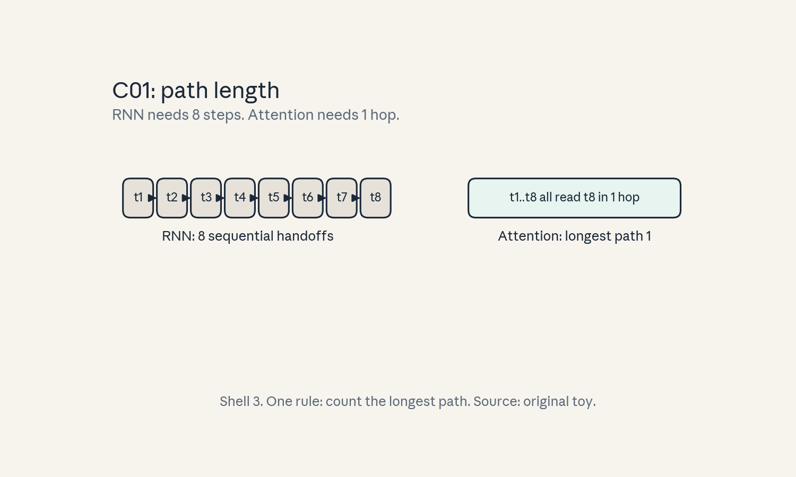
- Audit: unit
u01c01maps tof01. Before: sequential handoffs. After: one-hop access. Claim changes state (count of steps).
C02: pretraining/fine-tuning
Source, scope, objectives, dependencies
Calendar anchor: Week 1, Sep 27, “Pretraining and Fine-Tuning”. Scope: the two-phase recipe and why it works. Objective: state the pretraining objective and what fine-tuning changes. Depends on P10, P13.
Motivating question and tiny toy
Question: labeled data is scarce but raw text is abundant. How does the model learn from text with no labels? Toy: corpus of 4 sentences, vocabulary of 16 tokens. The label for each position is the next token. No human labels exist.
Mental model
Pretraining is school: the model reads a library and learns to predict each next word, which forces it to learn grammar, facts, and reasoning patterns. Fine-tuning is job training: a small labeled set steers the general graduate toward one task. The school phase needs scale. The job phase needs care.
Objects, shapes, assumptions
- Pretraining loss: next-token cross-entropy,
L = -mean(log p(x_t | x_<t))). - Fine-tuning: same architecture, new data mix, usually a smaller learning rate.
- Assumption: patterns learned from raw text transfer to the target task. This is an empirical claim, not a theorem.
Derivation
Next-token prediction on a corpus of D tokens gives D
training examples for free: every position is one example.
The gradient of the log-likelihood pushes probability mass
toward observed continuations. Fine-tuning continues the
same gradient descent from the pretrained weights, so the
start point already encodes language structure.
Computed example
Toy corpus: 4 sentences x 8 tokens = 32 tokens, so 31
next-token examples (the last token of each sentence has no
next token inside the toy). Vocabulary 16. A uniform model
has loss log(16) = 2.77 nats. After pretraining, suppose
mean loss drops to 1.20 nats. Perplexity falls from 16.0 to
exp(1.20) = 3.32. Same objects as lab-01.
Implementation and checks
import numpy as np
def perplexity(mean_nll):
return float(np.exp(mean_nll))
assert abs(perplexity(np.log(16.0)) - 16.0) < 1e-9
assert abs(perplexity(1.2) - 3.3201) < 1e-3
Check: perplexity of a uniform model equals vocabulary size. This invariant tests any perplexity implementation.
Complexity and costs
Pretraining cost dominates: 6PD FLOPs for P parameters
and D tokens (derived in C04). Fine-tuning costs a small
fraction, often under 1 percent of pretraining, but it
decides task behavior. The risk is reversed: pretraining
risks wasted compute, fine-tuning risks destroying general
ability (catastrophic forgetting).
Nearest alternative and selection boundary
Nearest alternative: train from scratch on the task data only. Selection boundary: fine-tune when the task has limited labels and resembles language in the pretraining corpus. Train from scratch when the domain is far from the corpus (for example, a new modality) or when data is plentiful enough to support it.
Failure case and counterexample
Broken assumption: “fine-tuning only adds skill.” Too large a learning rate or too many steps erases pretraining knowledge. Counterexample: fine-tune the toy model on 31 examples of one repetitive sentence with a high learning rate. Validation perplexity on general text rises while task loss falls. The fix is a smaller rate and early stopping on a held-out set.
Research reading and falsifiable extension
Reading: standard pretraining references from the calendar family, scaling-law literature sits in U06. Falsifiable extension: freeze the base model and train only a linear probe versus full fine-tuning on a small task. Hypothesis: full fine-tuning wins when the task needs new features, probe wins when the features already exist. Measure the gap as a function of task distance from the corpus.
Exercises
- E06 (recall): write the pretraining objective in one line. Name what supplies the labels.
- E07 (numerical): corpus of 10M tokens, vocab 32000. Uniform loss in nats and perplexity. Then loss 2.0 nats: perplexity?
- E08 (failure diagnosis): fine-tuning loss falls but general perplexity rises 40 percent. Name the failure and two fixes.
- E09 (counterfactual): labels cost nothing and data is infinite. Does pretraining still help? Argue both sides in three sentences.
- E10 (research): state the probe-vs-finetune hypothesis with a measurable task-distance proxy.
Visual units
- Figure
u01_c02_phases.png: loss curve with two segments. Left: long pretraining descent on a large corpus. Right: short fine-tuning descent on a small set. Source: original toy curve. Shell 3.
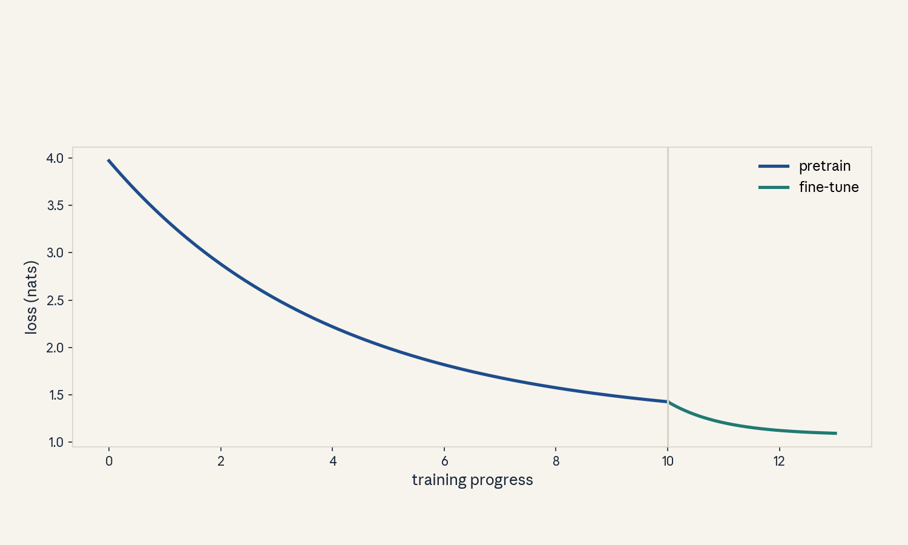
- Audit:
u01c02tof02. Before: general loss. After: task loss. One rule: continue descent on new data.
C03: attention dimensions
Source, scope, objectives, dependencies
Calendar anchor: Week 1, Sep 27, “Transformers”. Scope: the
shapes of Q, K, V and what each dimension means. Objective:
write every attention shape from n, h, d, T without a
reference. Depends on P12, P14.
Motivating question and tiny toy
Question: the model width is 8 and there are 2 heads. What
shape is each head’s query matrix for a 4-token input? Toy:
n = 8, h = 2, d = 4, T = 4, batch B = 1.
Mental model
Think of attention as h parallel librarians. Each
librarian reads the same shelf of T books but asks a
different question. Librarian i holds a query card of size
d per token and compares it against d-sized key cards.
The model width n splits evenly into h cards of size
d = n / h.
Objects, shapes, assumptions
- Input
X:(B, T, n). - Per head:
Q, K, V:(B, h, T, d)after reshape. - Projections
W_q, W_k, W_v, W_o:(n, n). - Scores
A:(B, h, T, T). Output:(B, T, n). - Assumption:
ndivisible byh. If not, the head split is undefined and code must raise.
Derivation
Q = X W_q has shape (B, T, n). Reshape to
(B, T, h, d), transpose to (B, h, T, d). Then
QK^T contracts the d axis: (B, h, T, d) times
(B, h, d, T) gives (B, h, T, T). Softmax runs over the
last axis (keys). Multiply by V, (B, h, T, T) times
(B, h, T, d) gives (B, h, T, d). Merge heads back to
(B, T, n), apply W_o.
Computed example
Toy: B = 1, T = 4, n = 8, h = 2, d = 4. Q shape:
(1, 2, 4, 4). Scores A shape: (1, 2, 4, 4) = 32
numbers. Output: (1, 4, 8). W_q has 8 x 8 = 64
parameters. Lab-01 asserts every shape in numpy.
Implementation and checks
import numpy as np
B, T, n, h = 1, 4, 8, 2
d = n // h
assert n % h == 0
X = np.random.default_rng(0).standard_normal((B, T, n))
Wq = np.random.default_rng(1).standard_normal((n, n))
Q = (X @ Wq).reshape(B, T, h, d).transpose(0, 2, 1, 3)
K = Q # shape check only, toy reuse
A = Q @ K.transpose(0, 1, 3, 2)
assert Q.shape == (B, h, T, d)
assert A.shape == (B, h, T, T)
Checks: softmax rows of A sum to 1 (lab asserts this).
Head merge round-trips to (B, T, n).
Complexity and costs
Scores cost O(T^2 d) per head, O(T^2 n) total. With the
toy: 2 heads x 4^2 x 4 = 128 multiply-adds for scores.
The T^2 term is the scaling pain of C10.
Nearest alternative and selection boundary
Nearest alternative: one head with d = n. Selection
boundary: multiple heads let different heads learn different
relations (position vs content) at the same total width.
Single-head attention is a valid baseline for ablations, not
a production choice at scale.
Failure case and counterexample
Broken assumption: “heads are independent.” They share the
input and the output projection mixes them. Counterexample:
zero out W_o rows for head 2 in the toy. The output still
changes because softmax denominators couple nothing across
heads, but the merge does. Diagnose shape bugs by checking
A rows sum to 1 per head.
Research reading and falsifiable extension
Reading: the original transformer paper’s multi-head
section. Falsifiable extension: vary h at fixed n on a
toy copying task. Hypothesis: too many heads (tiny d)
hurt because each head’s key space is too small to separate
tokens. Measure accuracy versus d.
Exercises
- E11 (recall): from
n = 12,h = 3,T = 5, write the shapes ofQ,A, and the merged output. - E12 (numerical): count score-matrix numbers for
B = 2,h = 8,T = 1024. Give fp16 bytes. - E13 (failure diagnosis): attention output has NaNs. List three shape-level causes to check first.
- E14 (counterfactual):
n = 10,h = 3. What breaks and what is the minimal fix? - E15 (research): state the many-heads hypothesis with a measurable separation metric.
Visual units
- Figure
u01_c03_shapes.png: blocks forX (T,n), split intohhead cards(T,d), scores(T,T), merge back to(T,n). One rule: split, score, merge. Source: original. Shell 2 (count the toy).
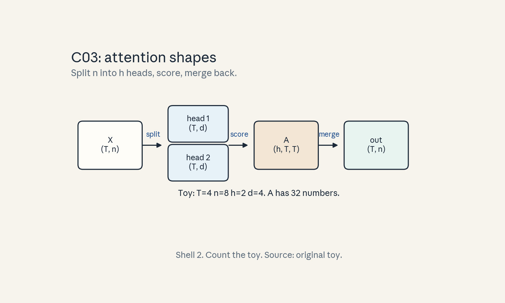
- Audit:
u01c03tof03. Architecture nouns: X, heads, scores, merge. Every block has an edge label.
C04: forward/backward
Source, scope, objectives, dependencies
Calendar anchor: Week 2, Oct 04, “Measuring the FLOPs of MLP and Transformer Training and Inference (Intro to Backpropagation)”. Scope: what the forward pass stores and what the backward pass costs. Objective: derive the 2x/4x FLOP ratio. Depends on P11.
Motivating question and tiny toy
Question: training costs about 3x inference per token. Where
does the factor of 3 come from? Toy: one linear layer,
y = Wx, W shape (8, 8), x shape (8,).
Mental model
The forward pass is a recipe: you follow it and produce the dish. Backward is the health inspector: it walks the kitchen in reverse, and at every station it needs the ingredients that were present (the activations) to assign blame to each step. The inspector visits each station twice: once to pass blame backward, once to blame the station’s own dials. That is the factor of 2 inside the backward pass.
Objects, shapes, assumptions
- Forward per token:
2PFLOPs forPparameters (one multiply-add per parameter, counted as 2). - Backward per token:
4PFLOPs (2P for activation gradients, 2P for weight gradients). - Total training:
6Pper token. - Assumption: every parameter participates in one dense
multiply-add per pass. Attention’s
T^2term is extra (C09, C10).
Derivation
Linear layer y = Wx with W (m, n): forward needs mn
multiplies and mn adds = 2mn FLOPs. Backward: gradient
w.r.t. x is W^T dy, another 2mn. Gradient w.r.t. W
is dy x^T, another 2mn. Total 6mn. For a transformer,
P parameters give 6P per token plus the attention term
12 L n T per token (derived in C09).
Computed example
Toy layer: m = n = 8, so mn = 64 parameters. Forward:
128 FLOPs. Backward: 256 FLOPs. Total: 384 FLOPs = 6 x 64.
Real scale: P = 7B, D = 1T tokens. Training FLOPs =
6 x 7e9 x 1e12 = 4.2e22. At 1e15 FLOP/s sustained, that
is 4.2e7 seconds, about 1.3 years on one device. Same
arithmetic as lab-01.
Implementation and checks
def train_flops(P, D_tokens):
return 6 * P * D_tokens
assert train_flops(64, 1) == 384
F = train_flops(7e9, 1e12)
assert abs(F - 4.2e22) / 4.2e22 < 1e-9
Check: ratio of backward to forward is exactly 2 for dense layers. Lab-01 verifies the 6P rule against a tiny autograd-free manual gradient.
Complexity and costs
Training is compute-bound at large batch: the 6P term
dominates. Memory cost is separate: the backward pass needs
activations for every layer (C06). Recomputation trades the
4P backward FLOPs for less memory (U04 C11).
Nearest alternative and selection boundary
Nearest alternative: forward-only methods (inference, forward-gradient estimators). Selection boundary: use backprop when exact gradients are affordable. Forward-only methods apply when memory cannot hold activations, at the price of noisy gradients.
Failure case and counterexample
Broken assumption: “backward is always 2x forward.” With activation checkpointing, the backward pass recomputes the forward, so the ratio rises toward 3x. Counterexample: a training run with full checkpointing shows backward time at 2.8x forward, not 2x. The 6P rule then undercounts. Name the recompute policy before quoting FLOPs.
Research reading and falsifiable extension
Reading: the Oct 04 calendar session introduces backpropagation for FLOP measurement. Falsifiable extension: measure forward/backward time ratio on a real GPU for a small transformer with and without checkpointing. Hypothesis: the ratio moves from ~2.0 to ~2.8. Report the recompute granularity.
Exercises
- E16 (recall): state the 6P rule and its two parts.
- E17 (numerical):
P = 1.3B,D = 300Btokens. Training FLOPs. Days on 1000 devices at 2e14 FLOP/s each. - E18 (failure diagnosis): profiler shows backward at 3.5x forward. Name two causes.
- E19 (counterfactual): attention term doubles. Which part of the 6P rule changes?
- E20 (research): design the checkpointing ratio experiment. Name the control.
Visual units
- Figure
u01_c04_flop_bars.png: three bars for the toy layer (forward 128, backward 256, total 384) and three bars for the 7B/1T scale in log height. Source: original toy. Shell 2.
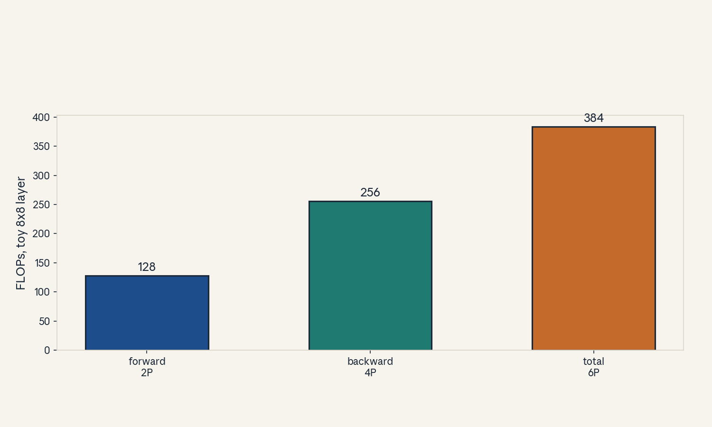
- Audit:
u01c04tof04. Before: forward only. After: forward plus backward. One rule: blame assignment needs two passes.
C05: parameter count
Source, scope, objectives, dependencies
Calendar anchor: Week 1, Sep 27, “Transformers”. Scope:
counting parameters of a transformer from shapes. Objective:
derive 12 n^2 per layer and the full model total. Depends
on P12.
Motivating question and tiny toy
Question: a model card says 7B parameters. How is that
number built from the architecture? Toy: n = 8, L = 2,
V = 16, d_ff = 32.
Mental model
Count bricks, not the building. Each layer has two rooms:
attention with 4 square matrices of size n x n, and the
MLP with two rectangles n x d_ff and d_ff x n. Add the
embedding table V x n. Multiply rooms by layers.
Objects, shapes, assumptions
- Attention:
W_q, W_k, W_v, W_o, each(n, n):4n^2. - MLP:
W_1 (n, d_ff),W_2 (d_ff, n):2 n d_ff. Withd_ff = 4n:8n^2. - Per layer:
12n^2. Embeddings:V n. Norms and biases: negligible, counted as 0 in the estimate. - Assumption:
d_ff = 4n. Variants (SwiGLU with 3 matrices) change the constant.
Derivation
Per layer: 4n^2 + 2 n (4n) = 12n^2. Total:
P = 12 L n^2 + V n. Embedding often tied to the output
head, so some counts add V n once, some twice. State the
choice.
Computed example
Toy: n = 8, L = 2, V = 16. Per layer: 12 x 64 =
768. Two layers: 1536. Embeddings: 16 x 8 = 128.
Total: 1664 parameters. Real scale: n = 4096, L = 32,
V = 32000. Per layer: 12 x 4096^2 = 201,326,592. Times
32: 6,442,450,944. Embeddings: 32000 x 4096 =
131,072,000. Total about 6.57B. This is the “7B class”
number. Lab-01 recomputes both.
Implementation and checks
def param_count(n, L, V, d_ff=None):
d_ff = d_ff or 4 * n
per_layer = 4 * n * n + 2 * n * d_ff
return L * per_layer + V * n
assert param_count(8, 2, 16, 32) == 1664
P = param_count(4096, 32, 32000)
assert 6.5e9 < P < 6.6e9
Check: per-layer count divisible by 12 when
d_ff = 4n. Embedding term linear in V.
Complexity and costs
Parameters set the memory floor: 2P bytes in fp16,
4P in fp32. They also set the per-token FLOP floor via
the 6P rule. Count before provisioning hardware.
Nearest alternative and selection boundary
Nearest alternative: count with torch.numel() on a real model. Selection boundary: the formula is for planning and cross-checks. The code count is the truth for a built model. Use the formula when the model does not exist yet.
Failure case and counterexample
Broken assumption: “12n^2 always holds.” SwiGLU MLPs use
three matrices (8/3 style sizing), MoE layers multiply
by expert count, tied embeddings halve the embedding term.
Counterexample: a SwiGLU model with d_ff = 11008,
n = 4096 has MLP params 3 x 4096 x 11008, not
8n^2. Quote the variant before the count.
Research reading and falsifiable extension
Reading: architecture papers state their counts, the
calendar family covers the transformer block. Falsifiable
extension: predict the parameter count of three public
model cards from (n, L, V) and compare to the card.
Hypothesis: the formula matches within 1 percent once the
MLP variant and tying are identified.
Exercises
- E21 (recall): write the per-layer formula and name the two rooms.
- E22 (numerical):
n = 2048,L = 24,V = 32000. Total parameters. fp16 bytes. - E23 (failure diagnosis): your count says 6.6B, the card says 7.2B. List two variant causes.
- E24 (counterfactual): embeddings tied. How does the total change?
- E25 (research): state the card-prediction hypothesis with the tolerance.
Visual units
- Figure
u01_c05_param_stack.png: stacked bars for the toy model (attention, MLP, embeddings per layer) and the 6.57B scale. Source: original toy. Shell 2.
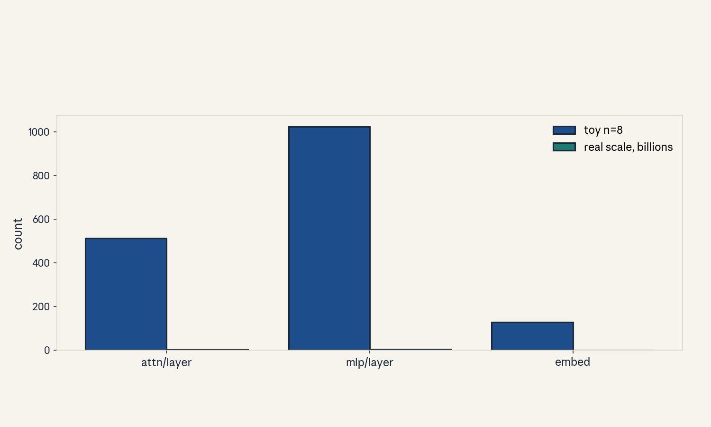
- Audit:
u01c05tof05. Before: shapes. After: counts. One rule: multiply and add.
C06: activation memory
Source, scope, objectives, dependencies
Calendar anchor: Week 2, Oct 04, KV-cache efficiency session (memory measurement theme). Scope: activation memory in training versus inference. Objective: compute bytes from shapes. Depends on P12, P15.
Motivating question and tiny toy
Question: the model fits in memory, but training runs out
of memory. What else consumes memory? Toy: B = 2,
T = 4, n = 8, L = 2, fp16.
Mental model
Parameters are the factory. Activations are the goods on the conveyor belt. Training keeps every item at every station (for the backward pass). Inference keeps only the current item. The belt, not the factory, causes most OOMs.
Objects, shapes, assumptions
- Per layer input
X:(B, T, n)numbers. - Bytes per number: 2 for fp16.
- Training stores all
Llayers:2 B T n Lbytes for the residual stream alone, plus attention internals. - Assumption: no checkpointing. Checkpointing cuts this at extra compute cost (U04 C11).
Derivation
One layer input: B T n numbers. Times 2 bytes (fp16).
Times L layers: 2 B T n L. Attention scores add
2 B h T^2 bytes per layer in the naive form. MLP
intermediate adds 2 B T d_ff per layer.
Computed example
Toy: B = 2, T = 4, n = 8, L = 2, fp16. Residual
stream: 2 x 2 x 4 x 8 x 2 = 256 bytes. Scores per layer:
2 x 2 x 16 x 2 = 128 bytes (h = 2). Real scale: B = 8,
T = 2048, n = 4096, L = 32, fp16. Residual:
2 x 8 x 2048 x 4096 x 32 = 4,294,967,296 bytes, exactly
4.0 GiB. MLP intermediate (d_ff = 16384): 2 x 8 x 2048 x
16384 = 536,870,912 bytes per layer,
times 32 is 16 GiB. Activations exceed parameters.
Implementation and checks
def activation_bytes(B, T, n, L, d_ff, h, bytes_per=2):
resid = bytes_per * B * T * n * L
mlp = bytes_per * B * T * d_ff * L
scores = bytes_per * B * h * T * T * L
return resid, mlp, scores
r, m, s = activation_bytes(2, 4, 8, 2, 32, 2)
assert r == 256
assert s == 256 # 2 layers x 128
Check: scores scale with T^2, the rest with T. Double
T in the toy and confirm the ratio.
Complexity and costs
Activation memory grows with B x T x L. This is why
long-context training needs sequence parallelism or
checkpointing. Inference with KV cache keeps O(T) per
layer instead (C07, U03 C03).
Nearest alternative and selection boundary
Nearest alternative: activation checkpointing (store a
subset, recompute the rest). Selection boundary: checkpoint
when activation memory exceeds device memory at the target
B x T. Keep full activations when the backward pass is
the bottleneck and memory allows.
Failure case and counterexample
Broken assumption: “fp16 halves all memory.” Master weights, optimizer states, and some activations stay in fp32. Counterexample: Adam keeps 8 bytes per parameter (m, v in fp32) plus the fp32 master copy. A 7B model needs about 14 GB for fp16 weights but over 80 GB with Adam states. Count the optimizer before provisioning.
Research reading and falsifiable extension
Reading: the Oct 04 session on efficiency measurement.
Falsifiable extension: measure peak allocated memory
versus T for a fixed small model on one GPU.
Hypothesis: peak memory grows linearly in T once scores
are tiled (FlashAttention), quadratically with naive
attention. The slope identifies the regime.
Exercises
- E26 (recall): write the residual-stream byte formula.
- E27 (numerical):
B = 4,T = 4096,n = 4096,L = 32, fp16. Residual bytes in GiB. - E28 (failure diagnosis): OOM at step 0 with a tiny model. Name the non-activation suspect.
- E29 (counterfactual): checkpoint every other layer. How do bytes and FLOPs change?
- E30 (research): state the memory-vs-T hypothesis with the slope test.
Visual units
- Figure
u01_c06_act_mem.png: bars for toy (residual, MLP, scores) and the real-scale GiB numbers. Source: original toy. Shell 2.
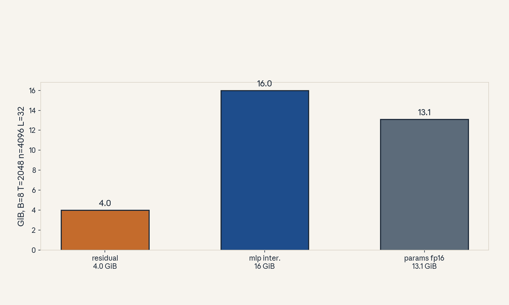
- Audit:
u01c06tof06. Before: one layer. After:Llayers stored. One rule: backward needs history.
C07: autoregressive workload
Source, scope, objectives, dependencies
Calendar anchor: Week 2, Oct 04, “Reviewing Autoregressive Generation and KV Caching”. Scope: the decode loop as a workload. Objective: describe one decode step with shapes and the KV cache. Depends on P14.
Motivating question and tiny toy
Question: generation produces one token per step. What
exactly is recomputed, and what is reused? Toy: prompt of
3 tokens, generate 2 more. n = 8, L = 1, h = 2.
Mental model
Writing with a perfect notebook. At each step you read the whole notebook (the KV cache) once, write one new line, and append that line’s notes to the notebook. You never re-read from scratch. The cost per step grows as the notebook thickens.
Objects, shapes, assumptions
- Step
tinput: one new token, shape(B, 1, n). - KV cache after
tsteps:(B, h, t, d)for keys and values, per layer. - Attention at step
treads alltcached pairs. - Assumption: causal mask. Each position sees only past positions.
Derivation
Without a cache, step t recomputes keys and values for
all t tokens: O(t) work per step, O(T^2) total.
With the cache, step t computes one new key and value
and reads t cached pairs: the read is O(t) memory
traffic, but no recompute. Total traffic over T steps
is O(T^2) reads of small vectors, while compute per
step stays O(n^2).
Computed example
Toy: prompt 3, generate 2, n = 8, h = 2, d = 4,
fp16. Cache after 5 tokens per layer: keys
2 x 5 x 4 = 40 numbers, values 40 numbers, 80 numbers,
160 bytes. Real scale per step at T = 2048: cache read
per layer 2 x 2048 x 4096 x 2 bytes = 33.5 MB, times 32
layers is about 1.07 GB of traffic per generated token.
Implementation and checks
def kv_cache_bytes(T, L, n, bytes_per=2):
# keys + values, all layers
return 2 * T * L * n * bytes_per
assert kv_cache_bytes(5, 1, 8) == 160
gb = kv_cache_bytes(2048, 32, 4096) / 2**30
assert 1.0 < gb < 1.1
Check: cache grows linearly in T. Append one token and
confirm the delta equals 2 L n numbers.
Complexity and costs
Per decode step: O(P) FLOPs (the weights are read once)
and O(T) KV traffic per layer. Decode is memory
bandwidth bound at batch 1: the arithmetic intensity is
low because each weight is used once per token.
Nearest alternative and selection boundary
Nearest alternative: recompute keys and values every step
(no cache). Selection boundary: cache when memory holds
2 T L n bytes. Recompute only when the cache does not
fit, which is rare at inference.
Failure case and counterexample
Broken assumption: “the cache always helps.” With a huge
batch, the cache itself becomes the memory bottleneck and
limits batch size. Counterexample: batch 256 at
T = 8192 needs 2 x 256 x 8192 x 32 x 4096 x 2 bytes,
about 1.1 TB. The cache caps the batch. Paged attention
(U08, second builder) manages this.
Research reading and falsifiable extension
Reading: the Oct 04 session on KV caching efficiency.
Falsifiable extension: time per token versus T at
batch 1. Hypothesis: linear growth with slope set by
memory bandwidth, since traffic per step is O(T).
Measure the slope and compare to the bandwidth spec.
Exercises
- E31 (recall): write the cache shape after
tsteps. - E32 (numerical):
T = 4096,L = 32,n = 4096, fp16. Cache GiB. - E33 (failure diagnosis): per-token time doubles when the prompt doubles. Name the term.
- E34 (counterfactual): no cache allowed. Total FLOPs for 100 tokens from a 10-token prompt?
- E35 (research): state the slope hypothesis with the bandwidth comparison.
Visual units
- Figure
u01_c07_decode_loop.png: three panels showing cache growth at steps 1, 2, 3 (hatched future slots, solid cached slots). Source: original toy. Shell 1.
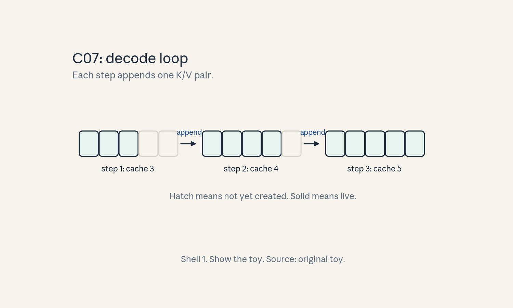
- Audit:
u01c07tof07. Before: cache of sizet. After: sizet + 1. One rule: append new K/V.
C08: training/inference contrast
Source, scope, objectives, dependencies
Calendar anchor: Week 2, Oct 04, “Measuring the FLOPs of MLP and Transformer Training and Inference”. Scope: the two regimes side by side. Objective: name five contrasts with numbers. Depends on P11, P15.
Motivating question and tiny toy
Question: the same weights serve training and chat. Why
do engineers treat them as different systems? Toy: P
params, T = 4 prompt, generate 4 tokens, batch 1.
Mental model
Training is a factory run: full shifts, every machine at once, maximum throughput, cost counted in total FLOPs. Inference is a taxi service: one passenger at a time, latency matters, the meter runs on memory bandwidth. Same car, different business.
Objects, shapes, assumptions
| Aspect | Training | Inference (decode) |
|---|---|---|
| Parallelism | over B x T |
over B only |
| FLOPs/token | 6P |
2P |
| Bound by | compute | memory bandwidth |
| Memory | activations O(BTL) |
KV cache O(BTL) but smaller constant |
| Objective | minimize loss | minimize latency |
Assumption: batch 1 for the inference column. Batching changes the row (U03 C06).
Derivation
Training processes B x T tokens in parallel, so each
weight is reused B x T times: high arithmetic intensity,
compute-bound. Decode touches each weight once per token:
intensity near 1 FLOP/byte for fp16 matvec, far below
the ridge point, so bandwidth-bound.
Computed example
Real scale: P = 7B, fp16, one A100-class device with
2 TB/s bandwidth (labeled toy spec, Not in source as a
vendor claim). Decode weight traffic per token: 14 GB.
Time floor: 14 / 2000 = 0.007 s, about 143 tokens/s max.
Training at B = 1024, T = 2048: 2M tokens per step,
6 x 7e9 x 2e6 = 8.4e16 FLOPs per step.
Implementation and checks
def decode_time_floor(P, bytes_per, bandwidth_Bps):
return P * bytes_per / bandwidth_Bps
t = decode_time_floor(7e9, 2, 2e12)
assert abs(t - 0.007) < 1e-9
Check: doubling bandwidth halves the floor. The lab verifies the table rows against toy runs.
Complexity and costs
Training cost is set by FLOPs. Inference cost at small batch is set by bytes moved. This split drives every serving decision in U08 (second builder).
Nearest alternative and selection boundary
Nearest alternative: treat inference as small-batch training (recompute everything). Selection boundary: the KV cache and weight-reuse analysis above decides. Never run decode as training without a cache unless memory forces it.
Failure case and counterexample
Broken assumption: “bigger batch always helps training.”
Beyond the critical batch size, extra batch adds little
statistical value per FLOP. Counterexample: doubling B
past the noise-dominated point doubles cost per step with
flat loss progress. Measure gradient noise scale first.
Research reading and falsifiable extension
Reading: the Oct 04 FLOP measurement session. Falsifiable extension: sweep batch size at fixed tokens and plot tokens/s versus batch for decode. Hypothesis: a knee where the regime flips from bandwidth-bound to compute-bound. Report the knee batch.
Exercises
- E36 (recall): fill the five-row table from memory.
- E37 (numerical):
P = 13B, fp16, 3 TB/s. Decode time floor per token. - E38 (failure diagnosis): decode at batch 64 is slow but bandwidth looks idle. Name the new bottleneck.
- E39 (counterfactual): infinite bandwidth. What limits decode now?
- E40 (research): state the knee hypothesis with the measurement.
Visual units
- Figure
u01_c08_regimes.png: two bars. Training: compute-bound block. Decode: bandwidth-bound block with the 7 ms floor marked. Source: original toy. Shell 3.
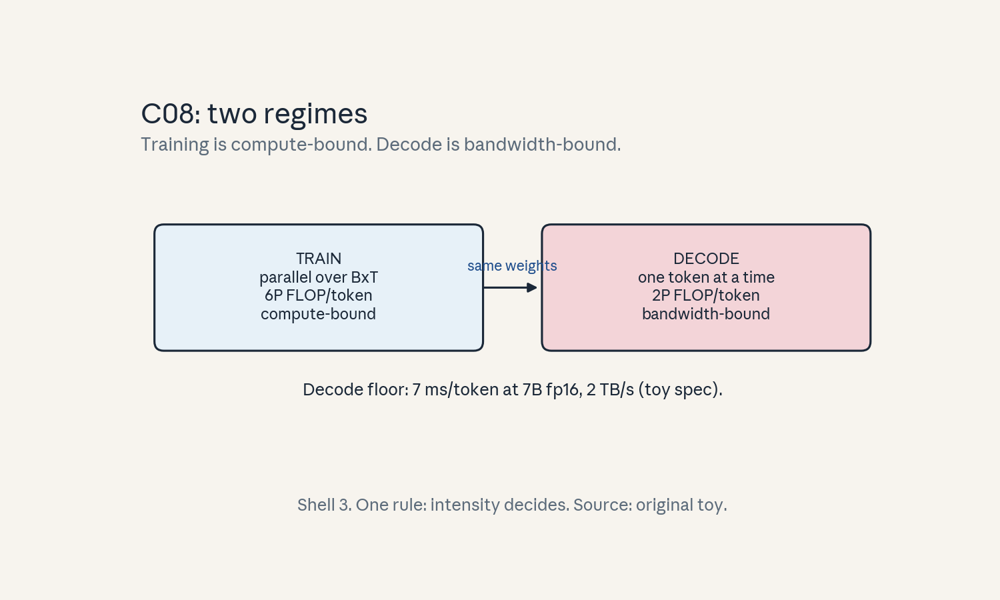
- Audit:
u01c08tof08. Before: one system view. After: two regimes. One rule: intensity decides.
C09: MLP versus attention cost
Source, scope, objectives, dependencies
Calendar anchor: Week 2, Oct 04, “Measuring the FLOPs of MLP and Transformer Training and Inference”. Scope: split the per-layer FLOPs between MLP and attention. Objective: find the crossover sequence length. Depends on C04, C05.
Motivating question and tiny toy
Question: at what sequence length does attention cost more
than the MLP? Toy: n = 8, d_ff = 32, L = 1.
Mental model
The MLP is a toll booth per car: fixed price per token. Attention is a town hall: every token talks to every token, so the price grows with the square of attendance. Short meetings are cheap. Long meetings dominate.
Objects, shapes, assumptions
- Per layer per token, forward: MLP
16n^2FLOPs (two matmuls,d_ff = 4n), attention projections8n^2, attention scores4Tn. - Total per token per layer:
24n^2 + 4Tn. - Assumption:
d_ff = 4n, dense, no sparsity.
Derivation
MLP: W_1 is (n, 4n), W_2 is (4n, n). Per token:
2 x (2n x 4n) = 16n^2 FLOPs. Attention QKVO: 4
projections, 4 x 2n^2 = 8n^2. Scores: QK^T
2T^2n per sequence, 2Tn per token. AV: same again.
Total scores per token: 4Tn. Crossover when
4Tn = 16n^2 + 8n^2, so T = 6n.
Computed example
Toy: n = 8. Equality at T = 48, scores strictly win
from T = 49. At T = 4: MLP 1024,
projections 512, scores 128. MLP wins. Real scale:
n = 4096. Crossover T = 24576. At T = 2048: MLP
per token 16 x 4096^2 = 2.68e8, scores
4 x 2048 x 4096 = 3.36e7. MLP dominates 8 to 1.
Attention dominates only past 24K tokens.
Implementation and checks
def layer_flops_per_token(n, T, d_ff=None):
d_ff = d_ff or 4 * n
mlp = 4 * n * d_ff # 2 matmuls x 2 flops
proj = 8 * n * n
scores = 4 * T * n
return mlp, proj, scores
mlp, proj, scores = layer_flops_per_token(8, 4)
assert (mlp, proj, scores) == (1024, 512, 128)
assert mlp + proj + scores == 24 * 64 + 4 * 4 * 8
Check: sum equals 24n^2 + 4Tn. Lab-01 verifies the
crossover by sweep.
Complexity and costs
Below 6n tokens, the model is an MLP cost problem.
Above, it is an attention cost problem. This decides
where optimization effort goes (U04 targets the
above-crossover regime).
Nearest alternative and selection boundary
Nearest alternative: shrink the MLP (d_ff = 2n) to move
the crossover down. Selection boundary: keep d_ff = 4n
when quality needs it, the crossover is a measurement,
not a law. Change the architecture and recompute.
Failure case and counterexample
Broken assumption: “attention is always the bottleneck.”
At T = 2048, n = 4096, the MLP is 8x the attention
scores. Counterexample: a profiler that only optimizes
attention leaves 89 percent of FLOPs untouched. Profile
first, then optimize the tall bar.
Research reading and falsifiable extension
Reading: the Oct 04 measurement session. Falsifiable
extension: profile per-layer time versus T on a real
GPU. Hypothesis: the measured crossover sits near 6n
in FLOP terms but shifts under memory effects. Report
both.
Exercises
- E41 (recall): derive the
T = 6ncrossover in three lines. - E42 (numerical):
n = 2048. CrossoverT. AtT = 4096, which part dominates and by what ratio? - E43 (failure diagnosis): attention kernel optimized 2x, end-to-end gain 5 percent. Explain with numbers.
- E44 (counterfactual):
d_ff = 8n. New crossover? - E45 (research): state the profiled-crossover hypothesis with both numbers.
Visual units
- Figure
u01_c09_crossover.png: two curves (MLP flat, attention rising) versusT, crossing at6n, toy numbers. Source: original toy. Shell 6 (change one factor:T).
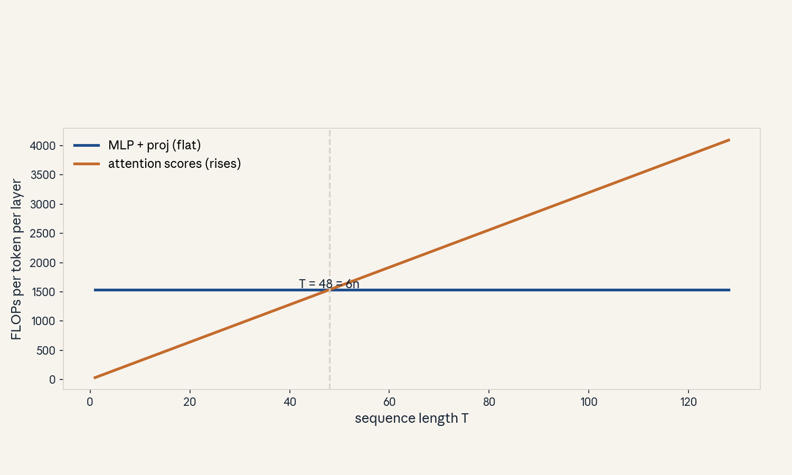
- Audit:
u01c09tof09. Before: shortT. After: longT. One rule: quadratic overtakes linear.
C10: sequence scaling
Source, scope, objectives, dependencies
Calendar anchor: Week 3, Oct 07, “Understanding the Scaling
Bottlenecks of Standard Attention”. Scope: how cost grows
with T. Objective: write the scaling of FLOPs, memory,
and KV cache in T. Depends on C09.
Motivating question and tiny toy
Question: the context window doubles from 4K to 8K. What
exactly doubles, and what quadruples? Toy: n = 8,
T in {4, 8}.
Mental model
A dinner party. Doubling guests doubles the food (linear: MLP, KV cache) but quadruples the handshakes (quadratic: attention scores). The handshake term decides whether the room still fits.
Objects, shapes, assumptions
- Per sequence per layer:
24 T n^2 + 4 T^2 nFLOPs. - Scores memory:
2 B h T^2bytes (fp16, naive). - KV cache:
4 B T L nbytes (fp16, keys plus values). - Assumption: naive attention materializes scores.
Derivation
Scores are T x T per head: T^2 entries, each from a
dot product of length d. FLOPs 2 T^2 d per head per
matmul, two matmuls, h heads: 4 T^2 n. Memory:
T^2 numbers per head. KV cache stores T vectors of
size n per layer: linear in T.
Computed example
Toy: n = 8, h = 2, B = 1, L = 1, fp16. T = 4:
scores 2 x 16 x 2 = 64 bytes. T = 8: scores
2 x 64 x 2 = 256 bytes, 4x. KV cache: T = 4 gives
4 x 1 x 4 x 1 x 8 = 128 bytes. T = 8 gives 256
bytes, 2x. Lab-01 checks the 4x/2x split.
Implementation and checks
def scaling(T, B=1, h=2, n=8, L=1):
scores = 2 * B * h * T * T
kvcache = 4 * B * T * L * n
return scores, kvcache
s4, k4 = scaling(4)
s8, k8 = scaling(8)
assert s8 == 4 * s4
assert k8 == 2 * k4
Check: the ratio test is the invariant. Any attention variant must report its own ratios.
Complexity and costs
T^2 memory is the hard wall for naive attention. T^2
FLOPs is a soft wall (compute can be bought). The cache
is linear but has a large constant (4BLn).
Nearest alternative and selection boundary
Nearest alternative: FlashAttention (U04) removes the
T^2 memory term. Selection boundary: naive attention
is fine below the memory wall. Past it, use tiled or
linear attention. Compute the wall before choosing.
Failure case and counterexample
Broken assumption: “longer context is free at inference.” The KV cache grows linearly and the per-step read grows with it. Counterexample: doubling context at fixed batch doubles cache bytes and slows every decode step. Budget the cache, not just the weights.
Research reading and falsifiable extension
Reading: the Oct 07 bottleneck session. Falsifiable
extension: measure max batch versus T on one GPU.
Hypothesis: max batch falls as 1/T in the cache-bound
regime. Fit the curve and report the constant.
Exercises
- E46 (recall): name the term that is quadratic and the two that are linear.
- E47 (numerical):
B = 1,h = 32,T = 32768, fp16. Naive score bytes in GiB. - E48 (failure diagnosis):
Tdoubled, OOM appeared. Which term do you blame first? - E49 (counterfactual): scores tiled, never materialized. What still scales badly?
- E50 (research): state the max-batch hypothesis with the fit.
Visual units
- Figure
u01_c10_scaling.png: log-log plot of scores (slope 2) and cache (slope 1) versusT, toy numbers. Source: original toy. Shell 6.
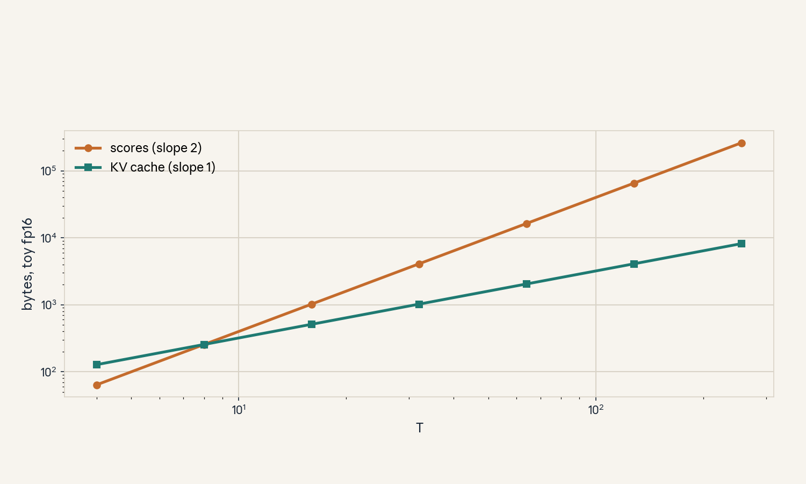
- Audit:
u01c10tof10. Before:T. After:2T. One rule: square the pairs, double the vectors.
C11: model quality
Source, scope, objectives, dependencies
Calendar anchor: Week 1, Sep 27 (pretraining family). Scope: what “quality” means and how it is measured. Objective: define perplexity and name its limits. Depends on P10, P13.
Motivating question and tiny toy
Question: loss fell from 3.0 to 2.5. Did the model get better at the task you care about? Toy: vocab 16, a 4-question downstream quiz.
Mental model
Perplexity is a weigh-in. It says the model is lighter (more certain), not that it can fight (do the task). Downstream eval is the sparring session. Both matter. Neither replaces the other.
Objects, shapes, assumptions
- Perplexity:
exp(mean negative log-likelihood). - Downstream: accuracy on a fixed task set.
- Assumption: the eval set represents the deployment task. A mismatch voids the comparison.
Derivation
Mean NLL of 2.5 nats gives perplexity e^2.5 = 12.2.
Mean NLL of 3.0 gives e^3.0 = 20.1. The ratio of
perplexities is e^{0.5} = 1.65. Loss differences are
log-scale, small drops are large certainty gains.
Computed example
Toy: 4 quiz questions. Model A: loss 2.5, quiz 3/4. Model B: loss 2.7, quiz 4/4. Lower loss did not win the quiz. Report both numbers. Lab-01 includes a toy where perplexity and accuracy disagree.
Implementation and checks
import numpy as np
def ppl(nll):
return float(np.exp(nll))
assert ppl(2.5) < ppl(3.0)
assert abs(ppl(0.0) - 1.0) < 1e-12 # perfect model
Check: perplexity 1.0 means zero uncertainty. Values below 1.0 are impossible, flag them as bugs.
Complexity and costs
Eval cost is linear in eval tokens. Cheap evals get run often and overfit the eval. Hold out a private set.
Nearest alternative and selection boundary
Nearest alternative: human preference ratings. Selection boundary: use perplexity for training health, task accuracy for capability claims, human eval for deployment decisions. Never promote on perplexity alone.
Failure case and counterexample
Broken assumption: “lower loss means a better product.” Counterexample: the toy above (B beats A on the quiz). Also: loss on a contaminated eval (test text in training) looks great and means nothing. Check for contamination before celebrating.
Research reading and falsifiable extension
Reading: standard eval practice, emergence caveats sit in U06. Falsifiable extension: correlate perplexity with task accuracy across 10 checkpoints. Hypothesis: the correlation breaks on tasks needing multi-step reasoning. Report per-task correlations, not one number.
Exercises
- E51 (recall): define perplexity in one sentence.
- E52 (numerical): losses 2.0 and 2.3. Perplexity ratio.
- E53 (failure diagnosis): eval accuracy jumps but the eval text appears in training. Name the problem.
- E54 (counterfactual): quiz and loss disagree. Which do you trust for a deployment call?
- E55 (research): state the correlation-break hypothesis with the task split.
Visual units
- Figure
u01_c11_quality.png: scatter of toy (perplexity, accuracy) points with one disagreeing pair highlighted. Source: original toy. Shell 8 (compare two measures).
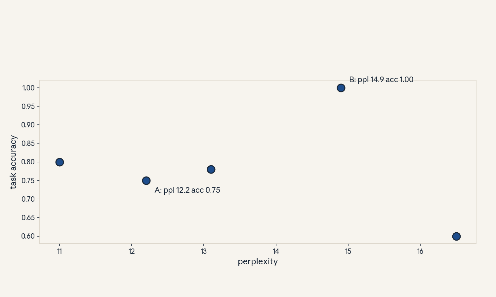
- Audit:
u01c11tof11. Before: loss only. After: loss plus task. One rule: measure the task.
C12: baseline
Source, scope, objectives, dependencies
Calendar anchor: Week 1 course framing (modeling choices need comparison). Scope: what a baseline is and why weak baselines lie. Objective: design a baseline for any claim in U01-U05. Depends on P10.
Motivating question and tiny toy
Question: your new attention variant trains 2x faster.
Faster than what? Toy: variant X versus a naive
attention baseline on T = 64, n = 64.
Mental model
A baseline is the sparring partner. Beat a weak partner and you learn nothing. The partner must be the best simple thing: the standard implementation, tuned as well as your method, on the same task and budget.
Objects, shapes, assumptions
- Baseline: reference method run under identical conditions (data, budget, metric).
- Ablation: your method minus one part.
- Assumption: budgets are matched. An unmatched budget comparison is hype, not science.
Derivation
Speedup = time(baseline) / time(method) at equal quality, or quality(method) - quality(baseline) at equal budget. Both need the same denominator. Report both directions when in doubt.
Computed example
Toy: baseline naive attention, T = 64: 100 ms per
step. Variant: 50 ms per step at equal loss. Speedup
2x. But a tiled baseline (FlashAttention) runs 30 ms.
True speedup versus the strong baseline: 0.6x, a
slowdown. The baseline choice flips the conclusion.
Implementation and checks
def speedup(t_base, t_new):
return t_base / t_new
assert abs(speedup(100.0, 50.0) - 2.0) < 1e-9
assert speedup(30.0, 50.0) < 1.0 # strong baseline wins
Check: always compute against two baselines (naive and strong) in the lab.
Complexity and costs
Strong baselines cost effort but prevent false wins. Budget 20 percent of experiment time for the baseline.
Nearest alternative and selection boundary
Nearest alternative: published numbers as baseline. Selection boundary: published numbers are fine for context, never for the headline claim. Re-run the baseline on your hardware for the claim.
Failure case and counterexample
Broken assumption: “the baseline was fair.” Common cheats: untuned baseline hyperparameters, smaller baseline budget, easier baseline task. Counterexample: the toy above. Audit checklists catch these.
Research reading and falsifiable extension
Reading: experimental method (P22). Falsifiable extension: take one published speedup claim in efficient attention and re-run with a strong baseline. Hypothesis: at least half the claimed gain vanishes. Report the before/after numbers.
Exercises
- E56 (recall): define baseline and ablation in one line each.
- E57 (numerical): baseline 120 ms, method 40 ms, strong baseline 35 ms. Two speedups.
- E58 (failure diagnosis): speedup claim with no baseline budget stated. What do you ask for?
- E59 (counterfactual): baseline cannot run on your hardware. What is the honest claim?
- E60 (research): state the re-run hypothesis with the audit list.
Visual units
- Figure
u01_c12_baselines.png: three bars (naive baseline, strong baseline, method) with two speedup arrows. Source: original toy. Shell 8.
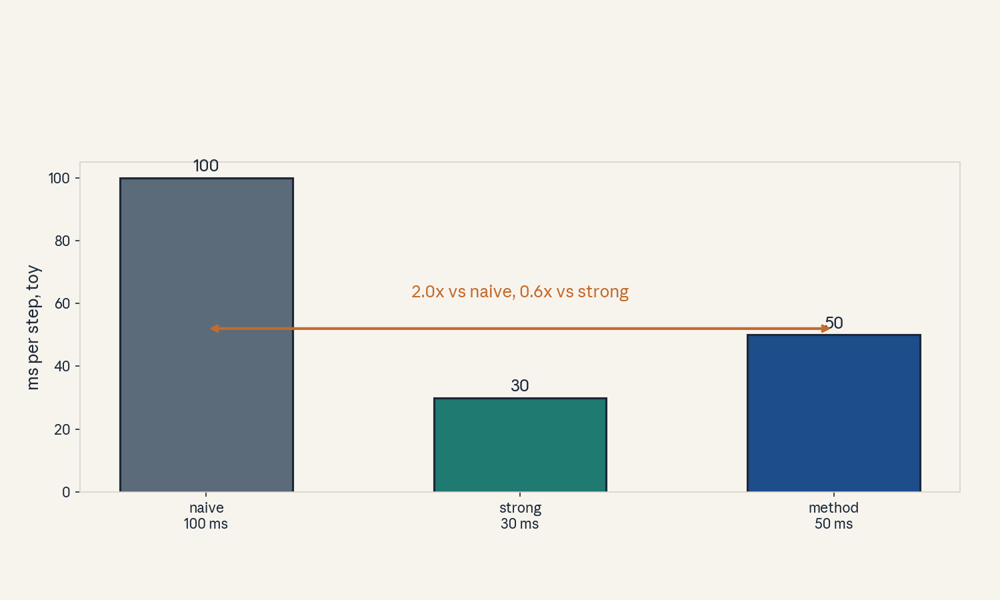
- Audit:
u01c12tof12. Before: one baseline. After: two baselines. One rule: match the budget.
Unit chapter plate
Figure u01_chapter.png: left region shows naive cost
(T^2 scores materialized, full activations stored),
center shows the stored objects (weights, KV cache,
activations), right shows the managed cost (tiled
attention, checkpointing, cache reuse), bottom states
the tradeoff in one line: “Memory buys parallelism,
bandwidth bills every token.” Every number on the plate
comes from the lesson toys above.
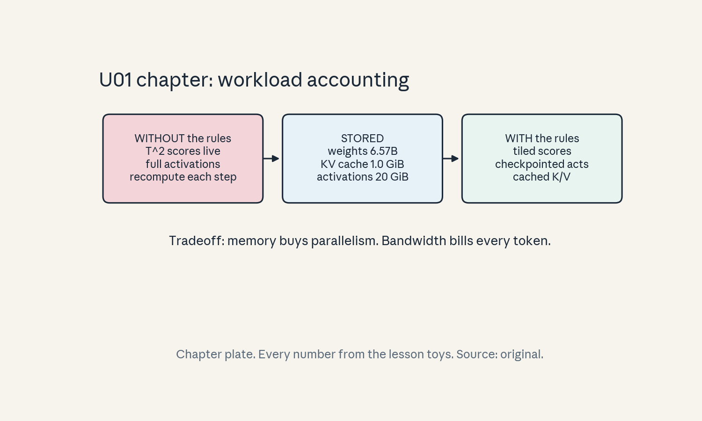
Russian-doll ladder: the autoregressive decode step (major mechanism)
- Shell 0: question: what does one decode step cost, and what would change the answer? Observable: ms per token.
- Shell 1: toy:
n = 8, prompt 3, generate 2 (C07). - Shell 2: objects:
(1, 1, n)input,(h, t, d)cache. - Shell 3: rule: append new K/V, read all cached pairs.
- Shell 4: algorithm and numpy reference in C07.
- Shell 5: invariant: cache grows by
2Lnnumbers per step, rows of attention sum to 1. - Shell 6: change
Tonly, predict traffic doubles whenTdoubles, measure in lab-01. - Shell 7: break causality (no mask): the model peeks at the future, generation quality collapses.
- Shell 8: compare cached vs recompute decode under equal memory.
- Shell 9: falsifiable extension in C07 (slope vs bandwidth).
- Shell 10: production: the per-token floor sets serving cost and the batch cap (U08, second builder).
Role bridge
- Research engineer: the 6P rule and the crossover
T = 6nare the two numbers to carry into any profiling session. - LLM engineer: decode is bandwidth-bound, the KV cache formula sizes every deployment.
- Research scientist: perplexity versus task accuracy is the honesty check on every quality claim.